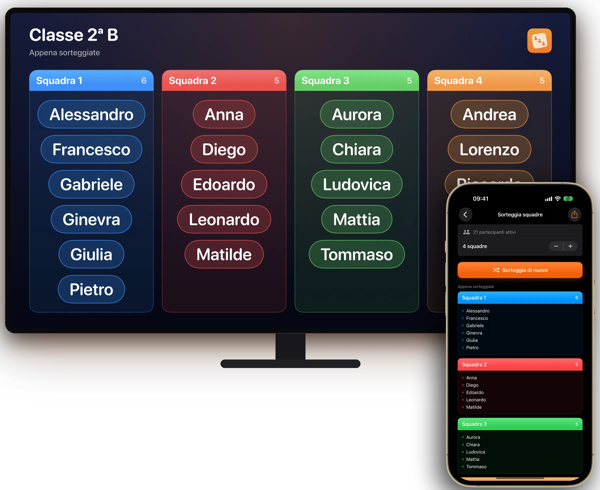
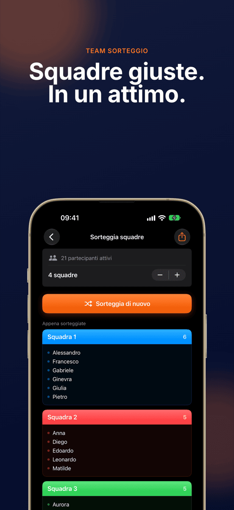
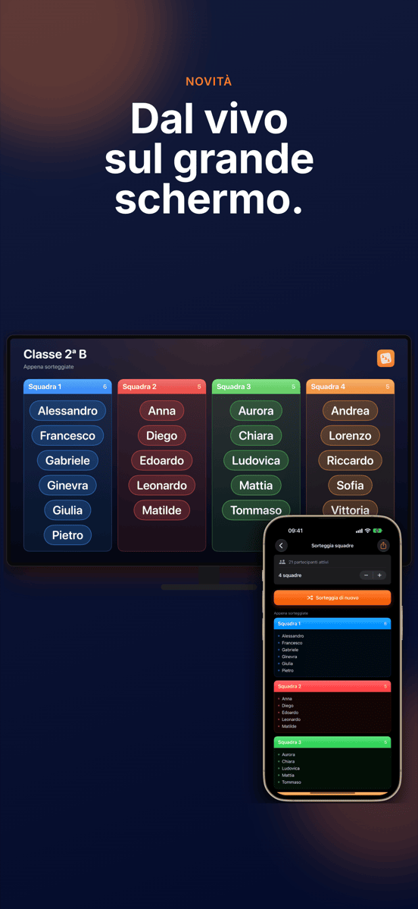
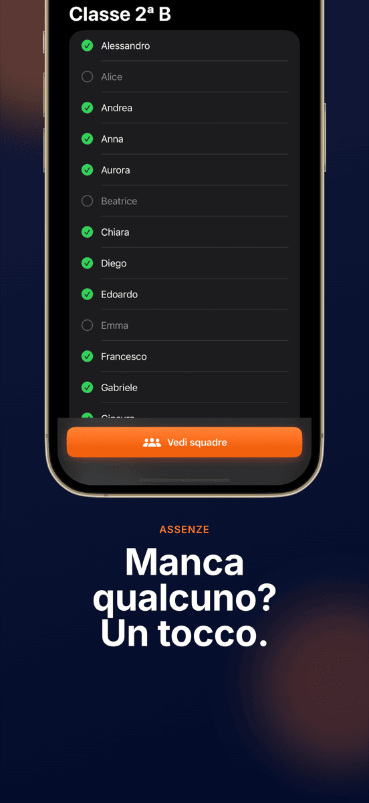
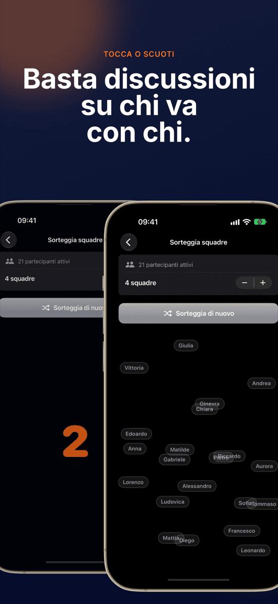
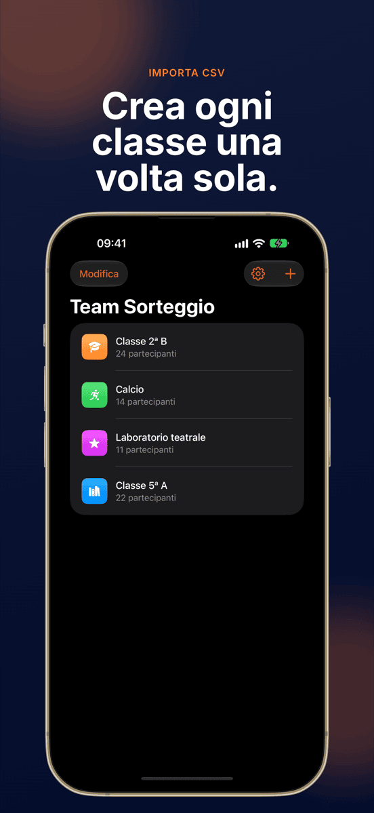
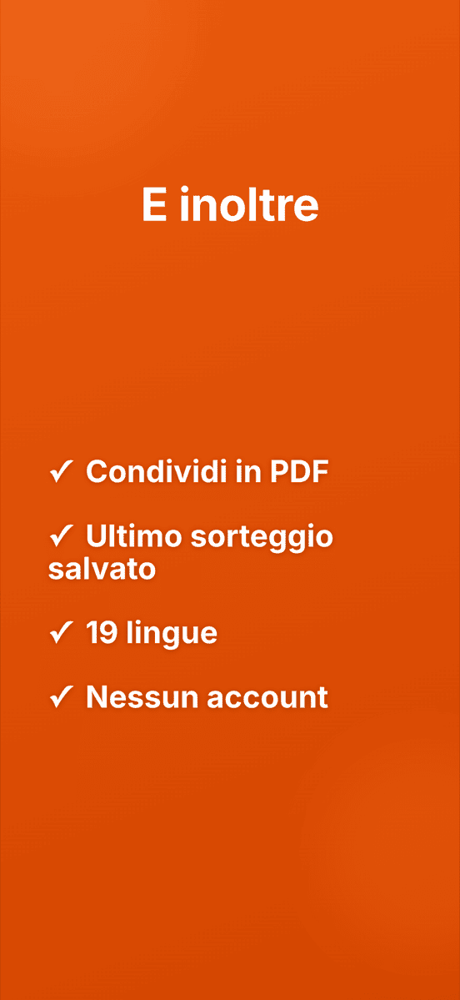

NOVITÀDal vivo sul grande schermo
Team Sorteggio
Squadre giuste. In un attimo.







Squadre senza discussioni.
In diretta sul grande schermo
Con AirPlay o via cavo tutta la classe vede nascere le squadre.
Un tocco e via
Tutti vengono distribuiti a caso e in modo equilibrato tra le squadre.
I gruppi restano salvati
Crea una classe, una squadra o un club una volta sola e sorteggia tutte le volte che vuoi. Ogni gruppo conserva l’ultimo sorteggio.
Assente? Escluso
Togli gli assenti con un tocco e il sorteggio li salta.
Numero di squadre a scelta
Coppie, terzetti, gruppi da quattro o squadre più grandi.
Mescolato sotto gli occhi di tutti
Un’animazione mescola tutti i nomi in modo visibile. Scuotendo il dispositivo parte un nuovo giro.
Ecco come funziona.
Crea un gruppo
Scrivi i nomi o importa un CSV.
Togli gli assenti
Un tocco per ogni nome che oggi manca.
Sorteggia
Scegli il numero di squadre, tocca, guarda.
Mostra
Sul proiettore o come PDF.
Guida
Domande frequenti
Come divido un gruppo in squadre a caso?
Crea il gruppo una volta in Team Sorteggio, aggiungi i partecipanti e avvia il sorteggio. L’app distribuisce tutti a caso e in modo equilibrato nel numero di squadre scelto.
A chi serve Team Sorteggio?
A chi forma spesso delle squadre: insegnanti, allenatori, conduttori di laboratori, società sportive e organizzatori di eventi.
Posso scegliere il numero di squadre?
Sì. Scegli tu quante squadre, dalle coppie alle squadre grandi, e Team Sorteggio distribuisce i partecipanti in modo equilibrato.
I miei dati vengono salvati o trasmessi?
Tutti i gruppi e i nomi restano solo sul tuo dispositivo. Nessun dato viene inviato a un server.
Posso importare elenchi di nomi da Excel?
Sì. Esporta l’elenco come CSV da Excel o Google Sheets e importalo in Team Sorteggio. L’intera classe è pronta in pochi secondi.
Posso mostrare il sorteggio sul proiettore?
Sì. Quando iPhone o iPad è collegato a un proiettore, una Apple TV o un monitor con AirPlay o via cavo, Team Sorteggio vi mostra il sorteggio in diretta e in orizzontale. L’app si comanda sempre dal dispositivo.
Quanto costa Team Sorteggio?
Il download e il primo sorteggio sono gratuiti. Per i sorteggi successivi serve l’abbonamento Pro, mensile o annuale, che puoi provare prima gratuitamente. Team Sorteggio funziona su iPhone e iPad con iOS 17 o successivo.